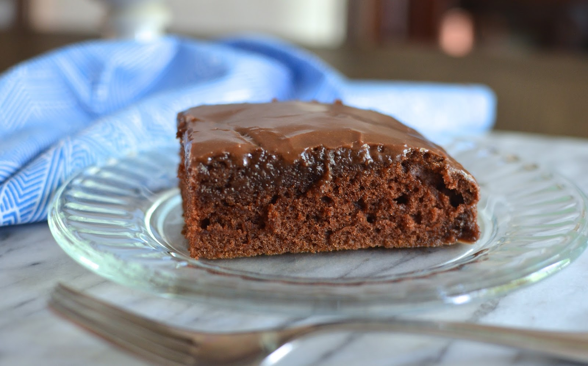

Texas Sheet Cake

Texas Sheet Cake
This Texas sheet cake is the perfect dessert for your next party, potluck, tailgate, or holiday get-together. A dense chocolate cake topped with a fudgy pourable icing, this Texas sheet cake recipe will satisfy any sweet tooth.
Ingredients:
For the cake:
- All-purpose flour
- white sugar
- baking soda
- salt
- sour cream
- eggs
- butter
- water
- unsweetened cocoa powder
For the icing:
- Milk
- unsweetened cocoa powder
- butter
- confectioners' sugar
- vanilla
- walnuts
Steps:
- Make the cake: Combine the dry ingredients, then beat in the sour cream and eggs. Melt butter in a saucepan. Add the water and cocoa powder, bring to a boil, and remove from the heat. Let cool slightly and stir into the sour cream mixture.
- Bake the cake: Pour the batter into a prepared cake pan and bake in the preheated oven until a toothpick comes out clean.
- Make the icing: Combine the milk, cocoa powder, and butter in a saucepan and bring to a boil. Remove from heat and stir in the remaining ingredients. Frost the warm cake.
- Tip: Don't let the icing cool too much before you spread it over the warm cake. It will harden into a fudge-like consistency very quickly!